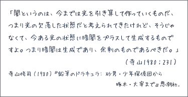

小論文を書く場合の手順
- テーマを選択する（大きなテーマ）
- テーマに関する基本的な情報を収集する
- テーマを絞り込む（小さなテーマ）
- テーマに関する詳しい情報を収集する
- テーマを具体化する（小論文の主題）
- 小論文の主題に関する詳しい情報を収集する
- 情報を分類・整理する
- 整理した情報をもとに構想を立てる
- 具体的な実例やデータを揃える
- 小論文を執筆する
（構成→草稿→初稿→推敲→完成）
テーマの選択
小論文では、あらかじめテーマが設定されている場合と、テーマが設定されていない場合とがある。
テーマが設定されていない場合には、自分でテーマを選択しなければならない。小論文のテーマは、自分自身の興味や関心に従って決めればよい。たとえば、『日本のアニメについて』、『地震について』、『お風呂の文化について』にようなテーマを考えればよいだろう。
テーマの理解
テーマ を設定したら、テーマに関する基本的な事項を理解する必要がある。
基本的な情報の収集
まずは、テーマに関する基本的な情報を収集しなければならない。
テーマに関する基本的な情報とは、
- テーマにはどのような意味が含まれているか（テーマの定義は？）
- テーマはどのように理解・解釈されているのか（通説や定説は？）
- テーマに関してどのような議論・論争があるか（ポイントはどこ？）
- テーマに関してどのような研究・理論があるか（研究の状況は？）
などのことである。
情報を収集するには、以下のような方法がある。
百科事典や術語集を使えば、テーマに関する最低限の知識を得ることができる。しかし、百科事典や術語集にはあまり詳しい内容は紹介されていないのがふつうである。定義や通説を知るだけならばよいが、テーマに関する議論の内容や研究の状況について知るには、百科事典や術語集だけでは十分でないことが多いだろう。
利用の手軽さという点では、ウェブページを参照するのが良い方法である。ウェブページには、基本的な事項を要領よく紹介しているものが多いので、それらを参考にするのがよいだろう。
ただ、最も良い方法は、ウェブページだけではなく、入門書や解説書もあわせて読むことである。入門書や解説書は、ウェブページと違って必ずしも最新の情報を提供するわけではないが、内容が体系的で、説明も詳細であることが多いからである。
基本的な情報の理解
テーマに関する基本的な情報が収集できたら、その情報を使って、テーマに関する基本的な理解を得なければならない。
少なくとも、次の点は理解しておくようにしたい。
- 専門用語の意味
- おおかまな研究の状況
テーマの絞り込み
テーマに関する基本的な情報によって、おおかまな研究の状況が理解できたら、すでに決めておいたテーマを絞り込んでみる。
研究の状況にも注意しながら、自分自身の興味や関心に従って、テーマを絞り込んでいけばよいだろう。
多くの研究がなされているものを選べば、手掛かりは多いがオリジナルなアイディアは出しにくくなる。他方、研究が手薄なものを選べば、オリジナルなアイディアは出しやすいが手掛かりにできるものが少なくなる。
たとえば、次のようにテーマを絞り込んでみる。
- 日本のアニメについて→『日本アニメの東アジアへの輸出について』
- 地震について→『地震と防災について』
- お風呂の文化について→『お風呂でのシャワーの使い方について』
テーマの具体化
〔論文が目指すもの〕で述べたように、論文は《特定の問題に答えを出すこと》を目指して書かれるもの
である。小論文でも、問題とその答えとを明確に提示しなければならない。
そのためには、絞り込んだテーマから、『小論文の主題』を引き出さなければならない。
テーマに関する詳しい情報の収集
『小論文の主題』を見いだすには、絞り込んだテーマに関する詳しい情報を収集する必要がある。
情報を収集するには、以下のような方法がある。
- ウェブページのハイパリンクを利用する
- ウェブページに記されている「参考文献」を利用する
- 入門書や解説書の参考文献欄を利用する
- 図書館に行って該当する分野の書籍がある棚を探す
- 図書館に行って図書目録や図書検索を利用する
- "NACSIS Webcat"などのオンライン図書目録や"国立国会図書館NDL-OPAC"などのオンライン図書検索を利用する
情報を収集するときには、絞り込んだテーマに関する資料を幅広く集めるようにする。多様な情報が集まれば、『小論文の主題』が見つけやすくなるからである。
小論文の主題の決定
テーマに関する詳しい情報を収集したら、その内容をよく理解するように努めなければならない。
詳しい情報の内容が理解できたら、テーマに関する疑問文をつくってみる。なお、ここで疑問文というのは、「どうやって……か？」、「なぜ……か？」といった文のことである。
このようにしてつくった疑問文によって、小論文のテーマを具体化する。たとえば、次のようにしてテーマを具体化すればよい。
- 日本のアニメについて→日本アニメの東アジアへの輸出について→『なぜ日本アニメは東アジアに受けいれられたのか？』
- 地震について→地震と防災について→『どうすれば地震の被害を少なくできるか？』
- お風呂の文化について→お風呂でのシャワーの使い方について→『どうして日本人は湯船につかるのか？』
主題の決定について、さらに詳しいことは【テーマの決め方】を参照せよ。
小論文の構想
主題が決定したら、小論文の構想を考えていかなければならない。
主題に関する情報の収集
小論文の構想を考える前に、主題に関する詳しい情報を収集する必要がある。
主題に関する既存の研究（書籍や論文など）は『先行研究』と呼ばれる。先行研究はできるだけ多く集めなければならない（理想はすべての先行研究を集めることである）。
情報を収集する方法は、〔テーマに関する詳しい情報の収集〕を参照せよ。
情報のメモ
情報は、まず『メモ』として記録に残すようにする。メモでは、できるだけ情報をそのまま書き写した方がよいだろう（オリジナルのままの方が汎用性がある）。
情報をそのまま書き写したときには、カギカッコ（「」）でくくっておくとわかりやすい。また、情報の出典は必ず明記しておくようにする【参考→参考文献の書き方】。実際にレポートを書くときに情報の出典がわからないと、改めて調べ直さなければならなくなる。

分量のあるものの場合は、内容を要約して書いてもよい。このときも、情報の出典を必ず明記しておく【参考→参考文献の書き方】。
なお、いずれの方法でも、情報についての自分のコメントや意見を書いておくと、情報を整理する作業がしやすくなるだろう。
メモのメディアとコピー
メモは、ノートなどに書いてもいいし、コンピュータで入力して電子データにしてもよい。後でコンピュータを使ってレポートを作成するならば電子データにしておく方が便利だろう。
なお、情報を収集するときには、内容のメモだけでなく、資料そのものの『コピー』もとっておいた方がよい。
- 特に高価でない書籍は購入する
- 購入できない（購入しない）書籍ならば関連のある章や節をコピーする
- 論文や雑誌の記事ならば全文をコピーする
- ウェブページならば、ページをアーカイブ形式で保存するか、PDFに書き出す（プリントアウトする必要はない）
書籍など分量のあるものの場合、重要な部分だけをコピーしようとすると、後で前後の部分を確認したいときに困ることがある。できるだけ章や節などのまとまりをコピーするようにしたい。
情報の分類と整理
情報を収集したら、それらを分類・整理しなければならない。
情報の分類
情報を分類するときに重要なことは、情報の内容をできるだけ正確に理解することである。そのために、資料を繰り返し読んだり、意味のわからない箇所を調べたりするなど、内容を理解するための努力をしなければならない。
分類の基準は、テーマや主題によっても異なるが、たとえば次のように考えればよいだろう。
- 主題に関する既存の説明や解釈を含むもの
- 主題に関する批判的な見解を含むもの
- 主題に関わりのある理論や仮説を紹介しているもの
- 主題に関わりのある事実やデータを紹介しているもの
情報の整理
次に、分類した情報について、それぞれが《何をしようとしているのか》を考えながら情報を整理していく。たとえば、「これは概念を定義しようとしている」とか「これは現状を批判しようとしている」というように考えていけばよい。
先行研究の批判的検討
情報が整理できたら、それぞれの情報が主題で提示した問題の解決にどのくらい役立ちそうか（あるいは役立ちそうもないのか）考えてみる。どんな情報でも捨ててはいけない。役立ちそうにないものであっても批判の対象にできるかもしれない。
ここで重要なことは、それぞれの情報が主題で提示した問題に対してどのような考え・意見を表明しているのかを見極めることである。そして、そこに何か問題がないか批判的に検討するのである。
これは、先行研究を批判的に検討する作業である。先行研究の批判的検討では、次の点がポイントとなる。
- 十分に納得できる説明になっているか？
- より簡潔な説明のしかたはないか？
- 複数の異なる説明をひとつにまとめられないか？
- はっきりとした証拠が提示されているか？
- 反例（説明が当てはまらない事例）はないか？
- 異なる視点で捉えることができないか？
- 複数の異なる視点を融合させることはできないか？
- 他の事象との関連性が見落とされていないか？
疑念と疑問
世界には多くの職業的な研究者（たとえば、大学の先生）がいて、様々な研究を行なっている。このことは、レポートの小論文で何か新発見のできる可能性が低いことを意味している。
〔論文が目指すもの〕で述べたように、論文とは、新しい事実や事実に対する新しい解釈を発見しようとするものである。しかし、実際には、レポートの小論文で何かが発見できると期待してはいけない。
レポートの小論文で大切なことは、新しいことを発見をすることではなく、既存の説明を疑いの目で見つめ、既存の説明に対する自分なりの疑問を発見することなのである。
小論文の構成
小論文は論文の一種であるから、《特定の問題に答えを出すこと》を目指すものである。そのため、小論文では、次のような構成が基本となる。
- 序論：問題提起（問題を示す）
- 本論：議論（証拠を示す）
- 結論：帰結（答えを示す）
序論、本論、結論に、それぞれ何を書くのか考える。
特に重要なのは、本論に何を書くかである。どのような証拠をどのような順序で示して問題の答えを導くのか考えなければならない。
小論文の構成についてさらに詳しいことは、【レポートの構成】を参照せよ。
小論文の執筆
小論文の構想ができたら、実際に小論文を執筆する。
小論文のアウトライン
小論文を書くときには、まず、アウトラインを作成するとよい。
アウトラインとは、小論文の詳しい章立てのことである。たとえば、次のようなものを作成すればよい。
アウトラインの例
- 表題：お風呂の文化について
- 本文
- 序論
- テーマの提示（お風呂でのシャワーの使い方について考察する）
- 主題の提示（どうして日本人は湯船につかるのか？）
- 研究の動機（台湾のホテルの浴室にバスタブがなかった）
- 研究の方法（日本人と台湾人の入浴に対する意識を比較しながら、日本人にとって湯船につかることがどのような意味を持つのか明らかにする）
- 本論
- 入浴とは何か（定義）
- 入浴の歴史（概観）
- 日本のお風呂事情
- 台湾のお風呂事情
- 入浴の目的（意識調査の結果を考察）
- 日本の場合
- 台湾の場合
- 日本と台湾の比較（実際の入浴行動を分析）
- 浴槽による入浴
- シャワーのみの入浴
- 結論（まとめ：湯船につかることが持つ文化的意味）
- 注釈
- 参考文献リスト
下書きの作成
まず、アウトラインを肉付けする形で、それぞれの章や節の概要を書いてみる（おおまかな下書きを作成する）。
おおまかな下書きの作成で重要なことは、以下のとおりである。
- テーマ（問題）を明確にする
- 主題が明確になるようにする
- 自分の考え（論理の筋道）をまとめる
- 自分の立場を明示する
草稿の作成
次に、概要を肉付けする形で小論文の草稿を作成する（くわしい下書きを作成する）。
下書きの作成で重要なことは、以下のとおりである。
- 論点を整理する（ポイントを明確にする）
- 具体的な証拠・根拠を示す
- 全体にまとまりのあるものにする
- 論理的に文章を構成する
初稿の作成
草稿ができたら、草稿を修正する。草稿を読んで、意味のわからない部分があれば修正する（自分がわからないものが他人にわかるはずがない！）。また、わかりにくい部分があれば修正する（このときには、アウトラインを変更しても構わない）。こうして出来上がるのが、初稿（とりあえず出来上がった小論文）である。
推敲と完成
初稿のままでは、小論文として十分ではない。初稿が出来上がったら、しばらくしてから読み直してみる。初稿が出来上がったときには気づかなかった誤字や脱字、文法のミスや不適切な（わかりにくい）表現に気づくはずである。そのような問題点を修正する作業を『推敲』という（必要があれば推敲は何度も行なう）。
推敲が終われば、小論文の完成である。レポート用紙に清書するか、用紙にプリントアウトして提出すればよい（レポートを提出するときは、体裁にも注意すること。体裁については【レポートの体裁】を参照せよ）。